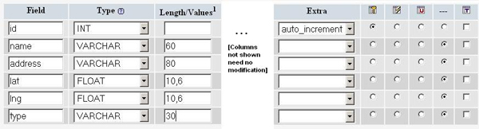
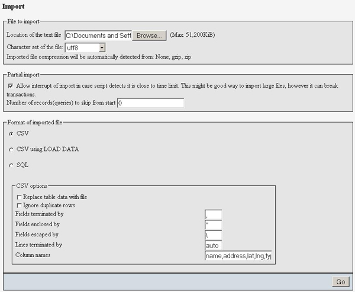
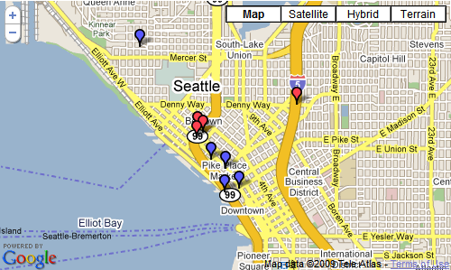

With contributions from Lary Stucker, Maps API Developer
April 2007
This tutorial is intended for developers who are familiar with PHP/MySQL, and want to learn how to use Google Maps with a MySQL database. After completing this tutorial, you will have a Google Map based off a database of places. The map will differentiate between two types of places—restaurants and bars—by giving their markers distinguishing icons. An info window with name and address information will display above a marker when clicked.
The tutorial is broken up into the following steps:
Creating the Table
When you create the MySQL table, you want to pay particular
attention to the lat and lng attributes.
With the current zoom capabilities of Google Maps, you should only
need 6 digits of precision after the decimal. To keep the storage
space required for your table at a minimum, you can specify that the
lat and lng attributes are floats of size
(10,6). That will let the fields store 6 digits after the decimal,
plus up to 4 digits before the decimal, e.g. -123.456789 degrees.
Your table should also have an id attribute to serve as
the primary key, and a type attribute to distinguish
between restaurants and bars.
Note: This tutorial uses location data that already have latitude and longitude information needed to plot corresponding markers. If you're trying to use your own data that don't yet have that information, use a batch geocoding service to convert the addresses into latitudes/longitudes. Some sites make the mistake of geocoding addresses each time a page loads, but doing so will result in slower page loads and unnecessary repeat geocodes. It's always better to hardcode the latitude/longitude information when possible. This link contains a good list of geocoders: http://groups.google.com/group/Google-Maps-API/web/resources-non-google-geocoders
If you prefer interacting with your database through the phpMyAdmin interface, here's a screenshot of the table creation.

If you don't have access to phpMyAdmin or prefer using SQL commands instead, here's the SQL statement that creates the table (phpsqlajax_createtable.sql):
CREATE TABLE `markers` (
`id` INT NOT NULL AUTO_INCREMENT PRIMARY KEY ,
`name` VARCHAR( 60 ) NOT NULL ,
`address` VARCHAR( 80 ) NOT NULL ,
`lat` FLOAT( 10, 6 ) NOT NULL ,
`lng` FLOAT( 10, 6 ) NOT NULL ,
`type` VARCHAR( 30 ) NOT NULL
) ENGINE = MYISAM ;
Populating the Table
After creating the table, it's time to populate it with data. Sample data for 10 Seattle places are provided below. In phpMyAdmin, you can use the IMPORT tab to import various file formats, including CSV (comma-separated values). Microsoft Excel and Google Spreadsheets both export to CSV format, so you can easily transfer data from spreadsheets to MySQL tables through exporting/importing CSV files.
Here's the sample data in CSV format (phpsqlajax_data.csv):
Pan Africa Market,"1521 1st Ave, Seattle, WA",47.608941,-122.340145,restaurant
Buddha Thai & Bar,"2222 2nd Ave, Seattle, WA",47.613591,-122.344394,bar
The Melting Pot,"14 Mercer St, Seattle, WA",47.624562,-122.356442,restaurant
Ipanema Grill,"1225 1st Ave, Seattle, WA",47.606366,-122.337656,restaurant
Sake House,"2230 1st Ave, Seattle, WA",47.612825,-122.34567,bar
Crab Pot,"1301 Alaskan Way, Seattle, WA",47.605961,-122.34036,restaurant
Mama's Mexican Kitchen,"2234 2nd Ave, Seattle, WA",47.613975,-122.345467,bar
Wingdome,"1416 E Olive Way, Seattle, WA",47.617215,-122.326584,bar
Piroshky Piroshky,"1908 Pike pl, Seattle, WA",47.610127,-122.342838,restaurant
Here's a screenshot of the import options used to transform this CSV into table data:

If you'd rather not use the phpMyAdmin interface, here are the SQL statements that accomplish the same results ( phpsqlajax_data.sql):
INSERT INTO `markers` (`name`, `address`, `lat`, `lng`, `type`) VALUES ('Pan Africa Market', '1521 1st Ave, Seattle, WA', '47.608941', '-122.340145', 'restaurant');
INSERT INTO `markers` (`name`, `address`, `lat`, `lng`, `type`) VALUES ('Buddha Thai & Bar', '2222 2nd Ave, Seattle, WA', '47.613591', '-122.344394', 'bar');
INSERT INTO `markers` (`name`, `address`, `lat`, `lng`, `type`) VALUES ('The Melting Pot', '14 Mercer St, Seattle, WA', '47.624562', '-122.356442', 'restaurant');
INSERT INTO `markers` (`name`, `address`, `lat`, `lng`, `type`) VALUES ('Ipanema Grill', '1225 1st Ave, Seattle, WA', '47.606366', '-122.337656', 'restaurant');
INSERT INTO `markers` (`name`, `address`, `lat`, `lng`, `type`) VALUES ('Sake House', '2230 1st Ave, Seattle, WA', '47.612825', '-122.34567', 'bar');
INSERT INTO `markers` (`name`, `address`, `lat`, `lng`, `type`) VALUES ('Crab Pot', '1301 Alaskan Way, Seattle, WA', '47.605961', '-122.34036', 'restaurant');
INSERT INTO `markers` (`name`, `address`, `lat`, `lng`, `type`) VALUES ('Mama\'s Mexican Kitchen', '2234 2nd Ave, Seattle, WA', '47.613975', '-122.345467', 'bar');
INSERT INTO `markers` (`name`, `address`, `lat`, `lng`, `type`) VALUES ('Wingdome', '1416 E Olive Way, Seattle, WA', '47.617215', '-122.326584', 'bar');
INSERT INTO `markers` (`name`, `address`, `lat`, `lng`, `type`) VALUES ('Piroshky Piroshky', '1908 Pike pl, Seattle, WA', '47.610127', '-122.342838', 'restaurant');
Outputting XML with PHP
At this point, you should have a table named markers
filled with sample data. You now need to write some PHP statements to
export the table data into an XML format that your map can retrieve
through asynchronous JavaScript calls. If you've never written PHP to
connect to a MySQL database, you should visit php.net and read up
on mysql_connect, mysql_select_db, my_sql_query, and mysql_error.
Note: Some tutorials may suggest actually writing your map page as a PHP file and outputting JavaScript for each marker you want to create, but that technique can be problematic. By using an XML file as an intermediary between your database and your Google Map, it makes for a faster initial page load, a more flexible map application, and easier debugging. You can independently verify the XML output from the database and the JavaScript parsing of the XML. And at any point, you could even decide to eliminate your database entirely and just run the map based on static XML files.
First, you should put your database connection information in a separate file. This is generally a good idea whenever you're using PHP to access a database, as it keeps your confidential information in a file that you won't be tempted to share. In the Maps API forum, we've occasionally had people accidentally publish their database connection information when they were just trying to debug their XML-outputting code. The file should look like this, but with your own database information filled in (phpsqlajax_dbinfo.php):
<?
$username="username";
$password="password";
$database="username-databaseName";
?>
Using PHP's domxml Functions to Output XML
Check your configuration or try initializing a
domxml_new_doc() to determine if your server's PHP has
dom_xml functionality on. If you do have access to
dom_xml functions, you can use them to create XML nodes,
append child nodes, and output an XML document to the screen. The
dom_xml functions take care of subtleties such as
escaping special entities in the XML, and make it easy to create XML
with more complex structures.
In the PHP, first initialize a new XML document and create the
"markers" parent node. Then connect to the database, execute a
SELECT * (select all) query on the markers table,
and iterate through the results. For each row in the table (each location), create a new XML node with the
row attributes as XML attributes, and append it to the parent node. Then dump the XML to the screen.
Note: If your database contains international characters or you otherwise need to force UTF-8 output, you can use utf8_encode on the outputted data.
The PHP file that does all that is shown below (phpsqlajax_genxml.php):
<?php
require("phpsqlajax_dbinfo.php");
// Start XML file, create parent node
$doc = domxml_new_doc("1.0");
$node = $doc->create_element("markers");
$parnode = $doc->append_child($node);
// Opens a connection to a MySQL server
$connection=mysql_connect (localhost, $username, $password);
if (!$connection) {
die('Not connected : ' . mysql_error());
}
// Set the active MySQL database
$db_selected = mysql_select_db($database, $connection);
if (!$db_selected) {
die ('Can\'t use db : ' . mysql_error());
}
// Select all the rows in the markers table
$query = "SELECT * FROM markers WHERE 1";
$result = mysql_query($query);
if (!$result) {
die('Invalid query: ' . mysql_error());
}
header("Content-type: text/xml");
// Iterate through the rows, adding XML nodes for each
while ($row = @mysql_fetch_assoc($result)){
// ADD TO XML DOCUMENT NODE
$node = $doc->create_element("marker");
$newnode = $parnode->append_child($node);
$newnode->set_attribute("name", $row['name']);
$newnode->set_attribute("address", $row['address']);
$newnode->set_attribute("lat", $row['lat']);
$newnode->set_attribute("lng", $row['lng']);
$newnode->set_attribute("type", $row['type']);
}
$xmlfile = $doc->dump_mem();
echo $xmlfile;
?>
Using PHP's echo to Output XML
If you don't have access to PHP's dom_xml functions,
then you can simply output the XML with the echo
function. When using just the echo function, you'll need
to use a helper function (e.g. parseToXML)
that will correctly encode a few special entities (<,>,",') to be XML friendly.
In the PHP, first connect to the database and execute the
SELECT * (select all) query on the markers table. Then
echo out the parent markers node, and iterate through the
query results. For each row in the table (each location), you need to
echo out the XML node for that marker, sending the name and address
fields through the parseToXML function first in case
there are any special entities in them. Finish the script by echoing
out the closing markers tag.
Note: If your database contains international characters or you otherwise need to force UTF-8 output, you can use utf8_encode on the outputted data.
The PHP file that does all this is shown below (phpsqlajax_genxml2.php):
<?php
require("phpsqlajax_dbinfo.php");
function parseToXML($htmlStr)
{
$xmlStr=str_replace('<','<',$htmlStr);
$xmlStr=str_replace('>','>',$xmlStr);
$xmlStr=str_replace('"','"',$xmlStr);
$xmlStr=str_replace("'",''',$xmlStr);
$xmlStr=str_replace("&",'&',$xmlStr);
return $xmlStr;
}
// Opens a connection to a MySQL server
$connection=mysql_connect (localhost, $username, $password);
if (!$connection) {
die('Not connected : ' . mysql_error());
}
// Set the active MySQL database
$db_selected = mysql_select_db($database, $connection);
if (!$db_selected) {
die ('Can\'t use db : ' . mysql_error());
}
// Select all the rows in the markers table
$query = "SELECT * FROM markers WHERE 1";
$result = mysql_query($query);
if (!$result) {
die('Invalid query: ' . mysql_error());
}
header("Content-type: text/xml");
// Start XML file, echo parent node
echo '<markers>';
// Iterate through the rows, printing XML nodes for each
while ($row = @mysql_fetch_assoc($result)){
// ADD TO XML DOCUMENT NODE
echo '<marker ';
echo 'name="' . parseToXML($row['name']) . '" ';
echo 'address="' . parseToXML($row['address']) . '" ';
echo 'lat="' . $row['lat'] . '" ';
echo 'lng="' . $row['lng'] . '" ';
echo 'type="' . $row['type'] . '" ';
echo '/>';
}
// End XML file
echo '</markers>';
?>
Using PHP's DOM functions to Output XML
First, check your configuration and make sure you are using PHP5. If you aren't, then use one of the previous techniques.
In PHP, first initialize a new XML document and create the "markers" parent node. Then connect to the database, execute a SELECT *
(select all) query on the markers table, and iterate through the
results. For each row in the table (each location), create a new XML
node with the row attributes as XML attributes, and append it to the
parent node. Then dump the XML to the screen.
Note: If your database contains international characters or you otherwise need to force UTF-8 output, you can use utf8_encode on the outputted data.
The PHP file that does all this is shown below (phpsqlajax_genxml3.php):
<?php
require("phpsqlajax_dbinfo.php");
// Start XML file, create parent node
$dom = new DOMDocument("1.0");
$node = $dom->createElement("markers");
$parnode = $dom->appendChild($node);
// Opens a connection to a MySQL server
$connection=mysql_connect (localhost, $username, $password);
if (!$connection) { die('Not connected : ' . mysql_error());}
// Set the active MySQL database
$db_selected = mysql_select_db($database, $connection);
if (!$db_selected) {
die ('Can\'t use db : ' . mysql_error());
}
// Select all the rows in the markers table
$query = "SELECT * FROM markers WHERE 1";
$result = mysql_query($query);
if (!$result) {
die('Invalid query: ' . mysql_error());
}
header("Content-type: text/xml");
// Iterate through the rows, adding XML nodes for each
while ($row = @mysql_fetch_assoc($result)){
// ADD TO XML DOCUMENT NODE
$node = $dom->createElement("marker");
$newnode = $parnode->appendChild($node);
$newnode->setAttribute("name",$row['name']);
$newnode->setAttribute("address", $row['address']);
$newnode->setAttribute("lat", $row['lat']);
$newnode->setAttribute("lng", $row['lng']);
$newnode->setAttribute("type", $row['type']);
}
echo $dom->saveXML();
?>
Checking that XML Output Works
Call this PHP script from the browser to make sure it's producing
valid XML. If you suspect there's a problem with connecting to your
database, you may find it easier to debug if you remove the line in
the file that sets the header to the text/xml content
type, as that usually causes your browser to try to parse XML and may
make it difficult to see your debugging messages.
If the script is working correctly, you should see XML output like this (phpsqlajax_expectedoutput.xml):
<markers>
<marker name="Pan Africa Market" address="1521 1st Ave, Seattle, WA" lat="47.608940" lng="-122.340141" type="restaurant"/>
<marker name="Buddha Thai & Bar" address="2222 2nd Ave, Seattle, WA" lat="47.613590" lng="-122.344391" type="bar"/>
<marker name="The Melting Pot" address="14 Mercer St, Seattle, WA" lat="47.624561" lng="-122.356445" type="restaurant"/>
<marker name="Ipanema Grill" address="1225 1st Ave, Seattle, WA" lat="47.606365" lng="-122.337654" type="restaurant"/>
<marker name="Sake House" address="2230 1st Ave, Seattle, WA" lat="47.612823" lng="-122.345673" type="bar"/>
<marker name="Crab Pot" address="1301 Alaskan Way, Seattle, WA" lat="47.605961" lng="-122.340363" type="restaurant"/>
<marker name="Mama's Mexican Kitchen" address="2234 2nd Ave, Seattle, WA" lat="47.613976" lng="-122.345467" type="bar"/>
<marker name="Wingdome" address="1416 E Olive Way, Seattle, WA" lat="47.617214" lng="-122.326584" type="bar"/>
<marker name="Piroshky Piroshky" address="1908 Pike pl, Seattle, WA" lat="47.610126" lng="-122.342834" type="restaurant"/>
</markers>
Creating the Map
Once the XML is working in the browser, it's time to move on to actually creating the map with JavaScript. If you have never created a Google Map, please try some of the basic examples in the documentation to make sure you understand the basics of creating a Google Map.
Loading the XML File
To load the XML file into the page, you can take advantage of the browser-provided
XMLHttpRequest object.
This object lets you retrieve a file
that resides on the same domain as the requesting webpage, and is the basis
of "AJAX" programming. The JS API v2 provided a built-in GDownloadUrl
function that wrapped this functionality, but as API v3 is designed to be
compact, it does not offer an equivalent wrapper function.
So, you can define your own function for loading the file, and call it
downloadUrl(). The function takes two parameters:
urlspecifies the path to either your XML file or to the PHP script that generates the file, depending if you want the XML to be dynamically updated when your database changes. It's usually easiest to have this reside in the same directory as the HTML so that you can just refer to it by filename.callbackindicates the function that's called when the XML is returned to the JavaScript.
The function declaration is shown below:
function downloadUrl(url,callback) {
var request = window.ActiveXObject ?
new ActiveXObject('Microsoft.XMLHTTP') :
new XMLHttpRequest;
request.onreadystatechange = function() {
if (request.readyState == 4) {
request.onreadystatechange = doNothing;
callback(request, request.status);
}
};
request.open('GET', url, true);
request.send(null);
}
Note: Since
XMLHttpRequest is asynchronous, the callback function
won't be called as soon as you invoke downloadUrl. The
bigger your XML file, the longer it may take. Don't put any code after
downloadUrl that relies on the markers existing
already—put it inside the callback function instead.
Now that the function is defined, you can call it from your code, passing in the name of your PHP file and a callback function. In the callback function, you find all the "marker" elements in the XML, and iterate through them. For each marker element found, retrieve the name, address, type, and lat/lng attributes. Create a marker, adding it to the map, and bind an info window to display a description when the user clicks on your marker.
downloadUrl("phpsqlajax_genxml.php", function(data) {
var xml = data.responseXML;
var markers = xml.documentElement.getElementsByTagName("marker");
for (var i = 0; i < markers.length; i++) {
var name = markers[i].getAttribute("name");
var address = markers[i].getAttribute("address");
var type = markers[i].getAttribute("type");
var point = new google.maps.LatLng(
parseFloat(markers[i].getAttribute("lat")),
parseFloat(markers[i].getAttribute("lng")));
var html = "<b>" + name + "</b> <br/>" + address;
var icon = customIcons[type] || {};
var marker = new google.maps.Marker({
map: map,
position: point,
icon: icon.icon,
shadow: icon.shadow
});
bindInfoWindow(marker, map, infoWindow, html);
}
});
Custom Icons
You can specify custom icons and shadows for your markers.
Start by creating an associative array which associates your icons to your type strings: 'restaurant' or 'bar.' This makes the icons easy to reference later when you create markers from the XML.
var customIcons = {
restaurant: {
icon: 'http://labs.google.com/ridefinder/images/mm_20_blue.png',
shadow: 'http://labs.google.com/ridefinder/images/mm_20_shadow.png'
},
bar: {
icon: 'http://labs.google.com/ridefinder/images/mm_20_red.png',
shadow: 'http://labs.google.com/ridefinder/images/mm_20_shadow.png'
}
};
Creating Markers & Info Windows
When you create your markers, you can retrieve the appropriate
icons by using the type as a key for the associate array
customIcons that you defined above. Forward the
.icon and .shadow properties as
google.maps.Marker constructor options. Then, construct
the HTML that you want to show up in the info window by concatenating
the name, address, and some <b></b> tags to bold the name.
Tip: Some tutorials instruct you to store HTML-formatted descriptions in your database, but doing so means you then have to deal with escaping HTML entities, and you'll be bound to that HTML output. By waiting until you've retrieved each attribute separately in the JavaScript, you are free to play around with the HTML on the client side and can quickly preview new formatting.
After constructing the HTML string, call bindInfoWindow.
This adds an event listener to the marker so that when clicked, an
info window is displayed.
function bindInfoWindow(marker, map, infoWindow, html) {
google.maps.event.addListener(marker, 'click', function() {
infoWindow.setContent(html);
infoWindow.open(map, marker);
});
}
Putting It All Together
When the page loads, the load function is called. This
function sets up the map and then calls
downloadUrl. Make sure your downloadUrl is
passing in the file that outputs the XML and that you can preview that
XML in the browser.
The full HTML code is shown below (phpsqlajax_map_v3.html).
<!DOCTYPE html >
<head>
<meta name="viewport" content="initial-scale=1.0, user-scalable=no" />
<meta http-equiv="content-type" content="text/html; charset=UTF-8"/>
<title>PHP/MySQL & Google Maps Example</title>
<script type="text/javascript" src="http://maps.googleapis.com/maps/api/js?sensor=false"></script>
<script type="text/javascript">
//<![CDATA[
var customIcons = {
restaurant: {
icon: 'http://labs.google.com/ridefinder/images/mm_20_blue.png',
shadow: 'http://labs.google.com/ridefinder/images/mm_20_shadow.png'
},
bar: {
icon: 'http://labs.google.com/ridefinder/images/mm_20_red.png',
shadow: 'http://labs.google.com/ridefinder/images/mm_20_shadow.png'
}
};
function load() {
var map = new google.maps.Map(document.getElementById("map"), {
center: new google.maps.LatLng(47.6145, -122.3418),
zoom: 13,
mapTypeId: 'roadmap'
});
var infoWindow = new google.maps.InfoWindow;
// Change this depending on the name of your PHP file
downloadUrl("phpsqlajax_genxml.php", function(data) {
var xml = data.responseXML;
var markers = xml.documentElement.getElementsByTagName("marker");
for (var i = 0; i < markers.length; i++) {
var name = markers[i].getAttribute("name");
var address = markers[i].getAttribute("address");
var type = markers[i].getAttribute("type");
var point = new google.maps.LatLng(
parseFloat(markers[i].getAttribute("lat")),
parseFloat(markers[i].getAttribute("lng")));
var html = "<b>" + name + "</b> <br/>" + address;
var icon = customIcons[type] || {};
var marker = new google.maps.Marker({
map: map,
position: point,
icon: icon.icon,
shadow: icon.shadow
});
bindInfoWindow(marker, map, infoWindow, html);
}
});
}
function bindInfoWindow(marker, map, infoWindow, html) {
google.maps.event.addListener(marker, 'click', function() {
infoWindow.setContent(html);
infoWindow.open(map, marker);
});
}
function downloadUrl(url, callback) {
var request = window.ActiveXObject ?
new ActiveXObject('Microsoft.XMLHTTP') :
new XMLHttpRequest;
request.onreadystatechange = function() {
if (request.readyState == 4) {
request.onreadystatechange = doNothing;
callback(request, request.status);
}
};
request.open('GET', url, true);
request.send(null);
}
function doNothing() {}
//]]>
</script>
</head>
<body onload="load()">
<div id="map" style="width: 500px; height: 300px"></div>
</body>
</html>
The map should look like this when loaded:
